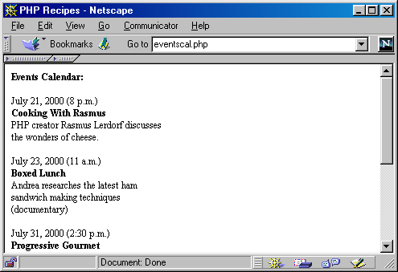

ГЛАВА 3
Выражения, операторы и управляющие конструкции
В этой главе представлены некоторые аспекты, играющие исключительно важную роль в любом языке программирования, — а именно, выражения, операторы и управляющие конструкции. Этот материал необходим в первую очередь при создании больших и сложных приложений РНР. Если вы уже знакомы с такими языками, как С и Java, эта глава всего лишь напомнит известные вам понятия. Если же вы впервые встречаетесь с этими терминами и понятиями, которые они обозначают, знание материала этой главы будет безусловно необходимо для понимания остальных глав книги.
Выражение описывает некоторое действие, выполняемое в программе. Каждое выражение состоит по крайней мере из одного операнда и одного или нескольких операторов. Прежде чем переходить к примерам, демонстрирующим использование выражений, необходимо поближе познакомиться с операторами и операндами.
Операнд представляет собой некоторую величину, обрабатываемую в программе. Операнды могут относиться к любому типу данных, представленному в главе 2. Вероятно, вы уже знакомы с концепциями обработки и использования операндов не только в повседневных математических вычислениях, но и по прежнему опыту программирования. Примеры операндов:
$а++; // $а - операнд
$sum = $val1 + $val2; // $sum. $val1 и $val2 - операнды
Оператор представляет собой символическое обозначение некоторого действия, выполняемого с операндами в выражении. Многие операторы известны любому программисту, но вы должны помнить, что РНР выполняет автоматическое преобразование типов на основании типа оператора, объединяющего два операнда, — в других языках программирования это происходит не всегда.
Приоритет и ассоциативность операторов являются важными характеристиками языка программирования (см. раздел «Ассоциативность операторов» этой главы). В табл. 3.1 приведен полный список всех операторов, упорядоченных по убыванию приоритета. Приоритет, ассоциативность и сами операторы подробно рассматриваются в разделах, следующих за таблицей.
Таблица 3.1. Операторы РНР
| Оператор | Ассоциативность | Цель |
| ( ) | - | Изменение приоритета |
| new | - | Создание экземпляров объектов |
| ! ~ | П |
Логическое отрицание, поразрядное отрицание |
| ++ -- | П | Инкремент, декремент |
| @ | П | Маскировка ошибок |
| / * % | Л | Деление, умножение, остаток |
| + - . | Л | Сложение, вычитание, конкатенация |
| << >> | Л | Сдвиг влево, сдвиг вправо (поразрядный) |
| < <= > >= | - | Меньше, меньше или равно, больше, больше или равно |
| == != === <> | - | Равно, не равно, идентично, не равно |
| & ^ | | Л | Поразрядные операции AND, XOR и OR |
| && || | Л | Логические операции AND и OR |
| ?: | П | Тернарный оператор |
| = += *= /= .= | П | Операторы присваивания |
| %= &= |= ^= | ||
| <<= >>= | ||
| AND XOR OR | Л | Логические операции AND, XOR и OR |
После знакомства с концепциями операторов и операндов следующие примеры выражений выглядят значительно понятнее:
$а = 5; // Присвоить целое число 5 переменной $а
$а = "5": // Присвоить строковую величину "5" переменной $а
$sum = 50 + $some_int; // Присвоить сумму 50 + $some_int переменной $sum
Swine = "Zinfandel"; // Присвоить строку "Zinfandel" переменной $wine
$inventory++: // Увеличить значение $inventory на 1
Объединяя операторы и операнды, вы получите более сложные выражения для выполнения нетривиальных вычислений. Пример:
$total_cost = $cqst + (Scost * 0.06): // прибавить к цене 6-процентный налог
Приоритет операторов
Приоритет является характеристикой операторов, определяющей порядок выполнения действий с окружающими операндами. В РНР используются те же правила приоритета, что и в школьном курсе математики. Пример:
$total_cost = $cost + $cost * 0.06;
Приведенная команда эквивалентна следующей:
$total cost = $cost + ($cost * 0.06);
Это объясняется тем, что оператор умножения обладает более высоким приоритетом по сравнению с оператором сложения.
Ассоциативность операторов
Ассоциативность оператора определяет последовательность выполнения операторов с одинаковым приоритетом (см. табл. 3.1). Выполнение может происходить в двух направлениях: либо слева направо, либо справа налево. При ассоциативности первого типа операции, входящие в выражение, выполняются слева направо. Например, команда
$value = 3*4*5*7*2;
эквивалентна следующей команде:
$value = ((((3 * 4) * 5) * 7) * 2);
Результат вычислений равен 840. Это объясняется тем, что оператор умножения (*) обладает левосторонней ассоциативностью. Операторы с правосторонней ассоциативностью и одинаковым приоритетом обрабатываются справа налево. Например, фрагмент
$с = 5;
$value = $а - $b - $с;
эквивалентен фрагменту
$c = 5;
$value = ($а - ($b - $с));
При обработке этого выражения переменным $value, $a, $b и $с будет присвоено значение 5. Это объясняется тем, что оператор присваивания (=) обладает правосторонней ассоциативностью.
Математические операторы
Математические операторы (табл. 3.2) предназначены для выполнения различных математических операций и часто применяются в большинстве программ РНР. К счастью, их использование обходится без проблем.
Таблица 3.2. Математические операторы
|
Пример |
Название |
Результат |
|
$а + $b |
Сложение |
Сумма $а и $b |
|
$а-$b |
Вычитание |
Разность $а и $b |
|
$а*$b |
Умножение |
Произведение $а и $b |
|
$а/$b |
Деление |
Частное от деления $а на $b |
|
$а % $b |
Остаток |
Остаток от деления $а на $b |
РНР содержит широкий ассортимент стандартных математических функций для выполнения основных преобразований и вычисления логарифмов, квадратных корней, геометрических величин и т. д. За обновленным списком таких функций обращайтесь к документации.
Операторы присваивания
Операторы присваивания задают новое значение переменной. В простейшем варианте оператор присваивания ограничивается изменением величины, в других вариантах (называемых сокращенными операторами присваивания) перед присваиванием выполняется некоторая операция. Примеры таких операторов приведены в табл. 3.3.
Таблица 3.3. Операторы присваивания
| Пример | Название | Результат |
| $а = 5; | Присваивание | Переменная $а равна 5 |
| $а += 5; | Сложение с присваиванием | Переменная $а равна сумме $а и 5 |
| $а *= 5; | Умножение с присваиванием | Переменная $а равна произведению $а и 5 |
| $а/=5; | Деление с присваиванием | Переменная $а равна частному отделения $а на 5 |
| $а .= 5; | Конкатенация с присваиванием | Переменная $а равна конкатенации $а и 5 |
Умеренное использование операторов присваивания обеспечивает более наглядный и компактный код.
Строковые операторы
Строковые операторы РНР (табл. 3.4) обеспечивают удобные средства конкатенации (то есть слияния) строк. Существует два строковых оператора: оператор конкатенации (.) и оператор конкатенации с присваиванием (.=), описанный в предыдущем разделе «Операторы присваивания».
 Конкатенацией
называется объединение двух и более
объектов в единое целое.
Конкатенацией
называется объединение двух и более
объектов в единое целое.
Таблица 3.4. Строковые операторы
|
Пример |
Название |
Результат |
| $a = "abc"."def" |
Конкатенация |
Переменной $а присваивается результат конкатенации $а и $b |
|
$а - "ghijkl" |
Конкатенация с присваиванием |
Переменной $а присваивается результат конкатенации ее текущего значения со строкой "ghijkl" |
Пример использования строковых операторов:
// $а присваивается строковое значение "Spaghetti & Meatballs" $а = "Spaghetti" . "& Meatballs"
// $а присваивается строковое значение "Spaghetti & Meatballs are delicious" $a .= "are delicious";
Конечно, два строковых оператора не исчерпывают всех возможностей РНР по обработке строк. За полной информацией об этих возможностях обращайтесь к главе 8.
Операторы инкремента и декремента
Удобные вспомогательные операторы инкремента (++) и декремента (--), приведенные в табл. 3.5, делают программу более наглядной и обеспечивают укороченную запись для увеличения или уменьшения текущего значения переменной на 1.
Таблица 3.5. Операторы инкремента и декремента
| Пример | Название | Результат |
| ++$а, $а++ | Инкремент | Переменная $а увеличивается на 1 |
| --$а, $а-- | Декремент | Переменная $а уменьшается на 1 |
Интересный факт: эти операторы могут располагаться как слева, так и справа от операнда. Действия, выполняемые оператором, зависят от того, с какой стороны от операнда он находится. Рассмотрим следующий пример:
$inventory = 15; // Присвоить Sinventory целое число 15
$old_inv = Sinventory--; // СНАЧАЛА присвоить $old_inv значение
// Sinventory. а ЗАТЕМ уменьшить Sinventory.
$orig_iinventory = ++inventory;// СНАЧАЛА увеличить Sinventory. а ЗАТЕМ
// присвоить увеличенное значение Sinventory
// переменной $orig_inventory.
Как видите, расположение операторов инкремента и декремента оказывает сильное влияние на результат вычислений.
Логические операторы
Логические операторы (табл. 3.6) наряду с математическими операторами играют важную роль в любом приложении РНР, обеспечивая средства для принятия решений в зависимости от значения переменных. Логические операторы позволяют управлять порядком выполнения команд в программе и часто используются в управляющих конструкциях (таких, как условная команда i f, а также циклы for и while).
Таблица 3.6. Логические операторы
|
Пример |
Название |
Результат |
$а && $b |
Конъюнкция |
Истина, если истинны оба операнда , |
|
$aAND$b |
Конъюнкция |
Истина, если истинны оба операнда |
$а И $b |
Дизъюнкция |
Истина, если истинен хотя бы один из операндов |
|
$а OR $b |
Дизъюнкция |
Истина, если истинен хотя бы один из операндов |
|
!$а |
Отрицание |
Истина, если значение $а ложно |
|
NOT !$a |
Отрицание |
Истина, если значение $а ложно |
$а XOR $b |
Исключающая дизъюнкция |
Истина, если истинен только один из операндов |
Логические операторы часто используются для проверки результата вызова функций:
file_exists("filename.txt") OR print "File does not exist!";
Возможен один из двух вариантов:
Операторы равенства
Операторы равенства (табл. 3.7) предназначены для сравнения двух величин и проверки их эквивалентности.
Таблица 3.7. Операторы равенства
|
Пример |
Название |
Результат |
| $a==$b | Проверка равенства | Истина, если $а и $b равны |
| $а != $b | Проверка неравенства | Истина, если $а и $b не равны |
$а === $b |
Проверка идентичности |
Истина, если $а и $b равны и имеют одинаковый тип |
Даже опытные программисты часто допускают одну распространенную ошибку — они пытаются проверять равенство двух величин, используя всего один знак равенства (например, $а = $b). Помните, при такой записи значение $b присваивается $а, и желаемый результат не будет достигнут.
Операторы сравнения
Операторы сравнения (табл. 3.8), как и логические операторы, позволяют управлять логикой программы и принимать решения при сравнении двух и более переменных.
Таблица 3.8. Операторы сравнения
|
Пример |
Название |
Результат |
|
$a<$b |
Меньше |
Истина, если переменная $а меньше $b |
|
$a>$b |
Больше |
Истина, если переменная $а больше $b |
|
$a <= $b |
Меньше или равно |
Истина, если переменная $а меньше или равна $b |
|
$a >= $b |
Больше или равно |
Истина, если переменная $а больше или равна $b |
|
($a-12)?5: -1 |
Тернарный оператор |
Если переменная $а равна 12, возвращается значение 5, а если не равна — возвращается 1 |
Обратите внимание: операторы сравнения предназначены для работы только с числовыми значениями. Хотя возникает искушение воспользоваться ими для сравнения строк, результат, скорее всего, окажется неверным. В РНР существуют стандартные функции для сравнения строковых величин. Эти функции подробно рассматриваются в главе 8.
Поразрядные операторы
Поразрядные операторы выполняют операции с целыми числами на уровне отдельных битов, составляющих число. Чтобы лучше понять принцип их работы, необходимо иметь хотя бы общее представление о двоичном представлении десятичных чисел. В табл. 3.9 приведены примеры десятичных чисел и соответствующих им двоичных представлений.
Таблица 3.9. Десятичные числа и их двоичные представления
| Десятичное целое | Двоичное представление |
| 2 | 10 |
| 5 | 101 |
| 10 | 1010 |
| 12 | 1100 |
| 145 | 10010001 |
| 1 452 012 | 1011000100111111101100 |
Поразрядные операторы, перечисленные в табл. 3.10, представляют собой особый случай логических операторов, однако они приводят к совершенно иным результатам.
Таблица 3.10. Поразрядные операторы
|
Пример |
Название |
Результат |
|
$а&$b |
Конъюнкция |
С битами, находящимися в одинаковых разрядах $а и $b, выполняется операция конъюнкции |
|
$а|$Ь |
Дизъюнкция |
С битами, находящимися в одинаковых разрядах $а и $b, выполняется операция дизъюнкции |
|
$а^$b
|
Исключающая |
С битами, находящимися в одинаковых разрядах $а и $b, выполняется операция исключающей дизъюнкции |
|
~$b |
Отрицание |
Все разряды переменной $b инвертируются |
|
$а << $b |
Сдвиг влево |
Переменной $а присваивается значение $b, сдвинутое влево на два бита |
|
$а >> $b |
Сдвиг вправо |
Переменной $а присваивается значение $b, сдвинутое вправо на два бита |
Если вам захочется больше узнать о двоичном представлении и поразрядных операторах, я рекомендую обратиться к обширному электронному справочнику Рэндалла Хайда (Randall Hyde) «The Art of Assembly Language Programming», доступному по адресу http://webster.cs.ucr.edu/Page_asm/Page_asm.html. Это лучший из ресурсов, которые мне когда-либо встречались в Web.
Управляющие конструкции предоставляют в распоряжение программиста средства для построения сложных программ, способных проверять условия и реагировать на изменения значений входных данных во время работы. Короче говоря, эти структуры управляют выполнением программы.
Управляющие конструкции обычно проверяют условия на истинность или ложность, и в зависимости от результата проверки выполняется то или иное действие. Рассмотрим выражение $а == $b. Это выражение истинно, если $а равно $b, и ложно в противном случае. Результат истинного выражения считается равным 1, а результат ложного выражения равен 0. Рассмотрим следующий фрагмент:
$а = 5;
$b = 5;
print $а == $b;
В результате выводится значение 1. Если изменить $а или $Ь и присвоить переменной значение, отличное от 5, выводится 0.
if
Команда if представляет собой разновидность команды выбора, которая вычисляет значение выражения и в зависимости от того, будет ли полученный результат истинным или ложным, выполняет (или не выполняет) блок программного кода. Существует две общих формы команды i f:
if (выражение) {
блок
}
и
if (выражение) {
блок
}
else {
блок
}
Как упоминалось в предыдущем разделе, проверка условий дает либо истинный, либо ложный результат. Выполнение блоков зависит от результата проверки, причем блок может состоять как из одной, так и из нескольких команд. В следующем примере после проверки условия выбирается и выводится одно из двух утверждений:
if ($cooking_weight < 200) {
print "This is enough pasta (< 200g) for 1-2 people";
}
else {
print "That's a lot of pasta. Having a party perhaps?";
}
Если в результате проверки условия выполняется всего одна команда, фигурные скобки не обязательны:
if ($cooking_weight < 100) print "Are you sure this is enough?";
elseif
Команда elseif добавляет в управляющую конструкцию if дополнительный уровень проверки и увеличивает количество условий, на основании которых принимается решение:
if (выражение) {
блок
}
elseif (выражение) {
блок
}
 В
РНР существует альтернативное
представление команды elself — в виде двух
отдельных слов else if. Оба варианта приводят к
одинаковым результатам, а альтернативное
представление поддерживается
исключительно для удобства. Команда elself
особенно полезна в тех случаях, когда
происходит последовательное уточнение
проверяемых условий. Обратите внимание:
условие elself вычисляется лишь в том случае,
если все предшествующие условия if и elself
оказались ложными.
В
РНР существует альтернативное
представление команды elself — в виде двух
отдельных слов else if. Оба варианта приводят к
одинаковым результатам, а альтернативное
представление поддерживается
исключительно для удобства. Команда elself
особенно полезна в тех случаях, когда
происходит последовательное уточнение
проверяемых условий. Обратите внимание:
условие elself вычисляется лишь в том случае,
если все предшествующие условия if и elself
оказались ложными.
if ($cooking_weight < 200) {
print "This is enough pasta (< 200g) for 1-2 people";
}
elseif ($cooking_weight < 500) {
print "That's a lot of pasta. Having a party perhaps?"; }
}
else {
print "Whoa! Who are you cooking for, a football team?";
}
Вложенные команды if
Вложение команд i f обеспечивает максимальный контроль над проверкой условий. Давайте исследуем эту возможность, усовершенствовав пример из предыдущих разделов. Предположим, вес продукта должен проверяться лишь в том случае, если речь идет о пасте (макаронных изделиях):
// Проверить значение $pasta
if ($food == "pasta") {
// Проверить значение $cooking_weight
if ($cooking_weight < 200) {
print "This is enough pasta (< 200g) for 1-2 people";
}
elseif ($cooking_weight < 500) {
print "That's a lot of pasta. Having a party perhaps?";
}
else {
print "Whoa! Who are you cooking for. a football team?";
}
}
Как видно из приведенного кода, вложенные команды if позволяют лучше управлять логикой работы программы. Вскоре, с увеличением объемов и сложности ваших программ, вы убедитесь, что вложение управляющих конструкций является неоценимым приемом в арсенале программиста.
Вычисление нескольких условий
При выборе логики работы программы в управляющей структуре можно проверять комбинацию сразу нескольких условий:
if ($cooking_weight < 0) {
print "Invalid cooking weight!";
}
if ( ($cooking_weight > 0) && ($cooking_weight < 200) ) {
print "This is enough pasta (< 200g) for 1-2 people";
}
elseif ( ($cooking_weight > 200) && ($cooking_weight < 500) ) {
print "That's a lot of pasta. Having a party perhaps?";
}
else {
print "Whoa! Who are you cooking for, a football team?";
}
Проверка сложных условий позволяет устанавливать интервальные ограничения, обеспечивающие более четкий контроль над логикой выполнения программы и уменьшающие количество лишних управляющих конструкций, в результате чего программа становится более понятной.
Альтернативное ограничение блоков
В управляющих структурах используются специальные ограничители, определяющие границы блоков. Фигурные скобки ({ }) уже упоминались выше. Для удобства программистов в РНР поддерживается альтернативный формат ограничения блоков:
if (выражение) :
блок
else :
блок
endif;
Следовательно, две приведенных ниже команды if полностью эквивалентны:
if ($а== $b) {
print "Equivalent values!";
}
if ($a == $b) :
print "Equivalent values!";
endif;
Конструкция while предназначена для многократного (циклического) выполнения блока команд. Блок команды while выполняется до тех пор, пока условие цикла остается истинным. Общая форма цикла while выглядит так:
while (выражение) :
блок
endwhile;
Рассмотрим использование цикла while на примере вычисления факториала (n!), где n = 5:
$n = 5;
$nсору = $n;
$factorial = 1; // Установить начальное значение факториала
while ($n > 0) :
$factorial - $n * $factorial;
$n--; // Уменьшить $n на 1
endwhile;
print "The factorial of $ncopy is $factorial.";
Программа выводит следующий результат:
The factorial of 5 is 120.
В этом примере $n уменьшается в конце каждой итерации. Условие цикла не должно быть истинным в тот момент, когда переменная $n станет равна 0, поскольку величина $factorial умножится на 0 — конечно, этого быть не должно.
 В
приведенном примере условие цикла
следовало бы оптимизировать и привести его
к виду $n > 1, поскольку умножать $factorial на 1
бессмысленно — число от этого не изменится.
Хотя ускорение работы программы будет
ничтожно малым, такие факторы всегда
принимаются во внимание с ростом объема и
сложности программ.
В
приведенном примере условие цикла
следовало бы оптимизировать и привести его
к виду $n > 1, поскольку умножать $factorial на 1
бессмысленно — число от этого не изменится.
Хотя ускорение работы программы будет
ничтожно малым, такие факторы всегда
принимаются во внимание с ростом объема и
сложности программ.
Цикл do. .while работает почти так же, как и цикл while, описанный в предыдущем разделе, однако в do. .while условие проверяется не в начале, а в конце каждой итерации. Учтите, что цикл do. .while всегда выполняется хотя бы один раз, а цикл while может вообще не выполняться, если перед входом в цикл условие окажется ложным:
do:
блок
while (выражение);
Давайте пересмотрим пример с вычислением факториала и перепишем его с использованием конструкции do. .while:
$n = 5:
$ncopy = $n;
$factorial = 1; // Установить начальное значение факториала
do {
$factorial = $n * $factorial;
$n--: // Уменьшить Sn на 1
} while (Sn > 0);
print "The factorial of Sncopy is $factorial.";
При выполнении этого примера будет получен тот же результат, что и при выполнении его прототипа из предыдущего раздела.
 В
цикле do. .while не поддерживается
альтернативный синтаксис (ограничение
блоков при помощи : и завершающего
ключевого слова), поэтому блок может
заключаться только в фигурные скобки.
В
цикле do. .while не поддерживается
альтернативный синтаксис (ограничение
блоков при помощи : и завершающего
ключевого слова), поэтому блок может
заключаться только в фигурные скобки.
Цикл for обеспечивает еще одну возможность многократного выполнения блоков. Он отличается от цикла while только тем, что условие изменяется в самой
управляющей конструкции, а не где-то внутри блока команд. Как и в случае с циклом while, цикл выполняется до тех пор, пока проверяемое условие остается истинным. Общая форма конструкции for выглядит так:
for (инициализация: условие; приращение) {
блок
}
Условная часть цикла for в действительности состоит из трех компонентов. Инициализация выполняется всего один раз и определяет начальное значение управляющей переменной цикла. Условие проверяется в начале каждой итерации и определяет, должна ли выполняться текущая итерация или нет. Наконец, приращение определяет изменение управляющей переменной при каждой итерации. Возможно, термин «приращение» в данном случае неточен, поскольку переменная может как увеличиваться, так и уменьшаться в соответствии с намерениями программиста. Следующий пример демонстрирует простейший случай применения цикла for:
for ($i = 10; $1 <- 100: $1 +=10) : // Обратная косая черта предотвращает
print "\$i = $i <br>"; endfor; // возможную интерполяцию переменной $1
Выполнение этого фрагмента дает следующий результат:
$i = 10
$i = 20
$i = 30
$i = 40
$i - 50
$i = 60
$i = 70
$i = 80
$i = 90
$i = 100
В этом примере управляющая переменная $i инициализируется значением 10. Условие заключается в том, что цикл продолжается до тех пор, пока $i не достигнет или не превысит пороговую величину 100. Наконец, при каждой итерации значение $i увеличивается на 10. В результате команда print выполняется 10 раз, каждый раз выводя текущее значение $i. Обратите внимание: для увеличения $i на 10 используется оператор сложения с присваиванием. Для этого есть веские причины, поскольку циклы for в РНР не поддерживают более традиционной записи $i = $i + 10.
Кстати, этот пример можно записать и в другом виде, но с теми же результатами:
for ($i = 10; $i <= 100; print "\$i - $i <br>". $i+=10);
Многие новички не понимают, зачем создавать несколько разновидностей циклов в языке программирования, будь то РНР или какой-нибудь другой язык. Почему нельзя обойтись одной циклической конструкцией? Дело в том, что у цикла for существует несколько специфических особенностей.
Например, вы можете инициализировать несколько переменных одновременно, разделяя команды инициализации запятыми:
for ($x=0,$y=0: $x+$y<10; $x++) :
$У += 2; // Увеличить $у на 2
print "\$y = $y <BR>"; // Вывести значение $у
$sum = $x + $y;
print "\surn = $sum<BR>"; // Вывести значение $sum
endfor;
Результат:
$y = 2
$sum = 2
Sy = 4
$sum = 5
$y = 6
$sum = 8
$y = 8
$sum = 11
Этот пример выводит текущие значения $y и суммы $х и $у. Как видно из приведенных результатов, выводится значение $sum = 11, хотя эта сумма выходит за границы условия цикла ($х + $у < 10). Это происходит из-за того, что при входе в данную итерацию переменная $у была равна 6, а переменная $х была равна 2. Значения переменных соответствовали условию цикла, поэтому $х и $у были присвоены новые значения, в результате чего была выведена сумма И. При очередной проверке условия сумма 11 превысила пороговое значение 10 и цикл завершился.
В управляющих выражениях циклов for могут отсутствовать любые компоненты. Например, вы можете передать ранее инициализированную переменную прямо в цикл, не присваивая ей определенного начального значения. Возможны и другие ситуации — например, приращение переменной цикла может осуществляться в зависимости от некоторого условия, определяемого в цикле. В этом случае приращение не должно указываться в управляющем выражении. Пример:
$х = 5:
for (: : $х +=2) :
print " $х ";
if ($x == 15) :
break; // Выйти из цикла for
endif;
endfor;
Результат выглядит так:
5 7 9 11 13 15
Хотя циклические конструкции for и while выполняют практически одинаковые функции, считается, что цикл for делает программу более наглядной. Это объясняется тем, что программист при виде команды for немедленно получает всю необходимую информацию о механике и продолжительности цикла. С другой стороны, в командах while приходится тратить лишнее время на поиск обновлений управляющих переменных — в больших программах это может занимать немало времени.
Конструкция foreach представляет собой разновидность for, включенную в язык для упрощения перебора элементов массива. Существуют две разновидности команды foreach, предназначенные для разных типов массивов:
foreach (массив as $элемент) {
блок
}
foreach (массив as $ключ => $элемент) {
блок
}
Например, при выполнении следующего фрагмента:
$menu = аrrау("pasta", "steak", "potatoes", "fish", "fries");
foreach ($menu as $item) {
print "$item <BR>";
}
будет выведен следующий результат:
pasta
steak
potatoes
fish
fries
В этом примере следует обратить внимание на два обстоятельства. Во-первых, конструкция foreach автоматически возвращается в начало массива (в других циклических конструкциях этого не происходит). Во-вторых, нет необходимости явно увеличивать счетчик или иным способом переходить к следующему элементу массива — это происходит автоматически при каждой итерации foreach.
Второй вариант используется при работе с ассоциативными массивами:
$wine_inventory = array {
"merlot" => 15,
"zinfandel" => 17,
"sauvignon" => 32
}
foreach ($wine_inventory as $i => $item_count) {
print "$item_count bottles of $i remaining<BR>";
}
В этом случае результат выглядит так:
15 bottles of merlot remaining
17 bottles of zinfandel remaining
32 bottles of sauvignon remaining
Как видно из приведенных примеров, конструкция foreach заметно упрощает работу с массивами. За дополнительной информацией о массивах обращайтесь к главе 5.
Принцип работы конструкции switch отчасти напоминает if — результат, полученный при вычислении выражения, проверяется по списку потенциальных совпадений.
Это особенно удобно при проверке нескольких значений, поскольку применение switch делает программу более наглядной и компактной. Общий формат команды switch:
switch (выражение) {
case (условие):
блок
case (условие):
блок
...
default:
блок
}
Проверяемое условие указывается в круглых скобках после ключевого слова switch. Результат его вычисления последовательно сравнивается с условиями в секциях case. При обнаружении совпадения выполняется блок соответствующей секции. Если совпадение не будет обнаружено, выполняется блок необязательной секции default.
Как будет показано в следующих главах, одной из сильнейших сторон РНР является обработка пользовательского ввода. Допустим, программа отображает раскрывающийся список с несколькими вариантами и каждая строка списка соответствует некоторой команде, выполняемой в отдельной конструкции case. Реализацию очень удобно построить на использовании команды switch:
$user_input = "recipes"; // Команда,выбранная пользователем
switch ($user_input) :
case("search") :
print "Let's perform a search!";
break;
case("dictionary") :
print "What word would you like to look up?";
break;
case("recipes") :
print "Here is a list of recipes...";
break;
default :
print "Here is the menu...";
break;
endswitch;
Как видно из приведенного фрагмента, команда switch обеспечивает четкую и наглядную организацию кода. Переменная, указанная в условии switch (в данном примере — $user_input), сравнивается с условиями всех последующих секций case. Если значение, указанное в секции case, совпадает Со значением сравниваемой переменной, выполняется блок этой секции. Команда break предотвращает проверку дальнейших секций case и завершает выполнение конструкции switch. Если ни одно из проверенных условий не выполняется, активизируется необязательная секция default. Если секция default отсутствует и ни одно из условий не выполняется, команда switch просто завершается и выполнение программы продолжается со следующей команды.
Вы должны помнить, что при отсутствии в секции case команды break (см. следующий раздел) выполнение switch продолжается со следующей команды до тех пор,
пока не встретится команда break или не будет достигнут конец конструкции switch. Следующий пример демонстрирует последствия отсутствия забытой команды break: $value = 0.4;
switch($value) :
case (0.4) :
print "value is 0.4<br>";
case (0.6) :
print "value is 0.6<br>";
break;
case (0.3) :
print "value is 0.3<br>";
break;
default :
print "You didn't choose a value!";
break;
endswitch;
Результат выглядит так:
value is 0.4
value is 0.6
Отсутствие команды break привело к тому, что была выполнена не только команда print в той секции, где было найдено совпадение, но и команда print в следующей секции. Затем выполнение команд конструкции switch прервалось из-за команды switch, следующей за второй командой print.
 Выбор
между командами switch и if практически не
влияет на быстродействие про-граммы.
Решение об использовании той или иной
конструкции является скорее личным делом
программиста.
Выбор
между командами switch и if практически не
влияет на быстродействие про-граммы.
Решение об использовании той или иной
конструкции является скорее личным делом
программиста.
Команда break немедленно прерывает выполнение той конструкции while, for или switch, в которой она находится. Эта команда уже упоминалась в предыдущем разделе, однако прерывание текущего цикла не исчерпывает возможностей команды break. В общем виде синтаксис break выглядит так:
break n;
Необязательный параметр n определяет количество уровней управляющих конструкций, завершаемых командой break. Например, если команда break вложена в две команды while и после break стоит цифра 2, происходит немедленный выход из обоих циклов. По умолчанию значение n равно 1; выход на один уровень может обозначаться как явным указанием 1, так и указанием команды break без параметра. Обратите внимание: команда i f не относится к числу управляющих конструкций, прерываемых командой break. Об этом следует помнить при использовании необязательного параметра п.
Рассмотрим пример использования команды break в цикле foreach:
$arr = array(14, 12, 128, 34, 5);
$magic number = 128:
foreach ($arr as $val) :
if (Sval == $magic_number) :
print "The magic number is in the array!";
break;
endif;
print "val is Sval <br>";
endforeach;
Если значение $magic_number присутствует в массиве $аrr (как в приведенном примере), поиск прерывается. Результат выглядит так:
val is 14
val is 12
The magic number is in the array!
Приведенный пример всего лишь демонстрирует использование команды break. В РНР существует стандартная функция in_array( ), предназначенная для поиска заранее заданной величины в массиве; эта функция подробно описана в главе 5.
Остается рассмотреть еще одну управляющую конструкцию РНР — continue. При выполнении команды continue в цикле пропускаются все оставшиеся команды текущей итерации и немедленно начинается новая итерация. Синтаксис команды continue в общем виде:
continue n;
Необязательный параметр n указывает, на сколько уровней внешних циклов распространяется действие continue.
Рассмотрим пример использования команды continue. Допустим, вы хотите сосчитать простые числа в интервале от 0 до некоторой заданной границы. Простоты ради предположим, что у нас имеется функция is_prime(), которая проверяет, является число простым или нет:
$boundary = 558;
for ($i = 0; $i <= $boundary: $i++) :
if (! is_prime($i)) :
continue;
endif;
$prime_counter++;
endfor;
Если проверяемое число является простым, блок команды if обходится и переменная $prime_counter увеличивается. В противном случае выполняется команда continue, в результате чего происходит немедленный переход в начало следующей итерации.
 Использование
continue в длинных и сложных алгоритмах
приводит к появлению запу- танного и
невразумительного кода. В подобных случаях
использовать continue не рекомендуется.
Использование
continue в длинных и сложных алгоритмах
приводит к появлению запу- танного и
невразумительного кода. В подобных случаях
использовать continue не рекомендуется.
Команда continue не является безусловно необходимой в программах, поскольку аналогичного эффекта можно добиться при помощи команды if.
Для практической демонстрации многих концепций, рассмотренных ранее, я завершаю эту главу описанием программы-календаря. В календаре хранится информация о последних кулинарных мероприятиях, семинарах по дегустации вин и любых других событиях, которые вы сочтете нужным в него включить. В этом проекте задействованы многие концепции, описанные в этой главе, а также представлен ряд новых концепций, которые будут рассматриваться в следующих главах.
Информация о событиях хранится в обычном текстовом файле и выглядит примерно так:
July 21, 2000|8 p. m.|Cooking With Rasmus|PHP creator Rasmus Lerdorf discusses the wonders of cheese.
July 23, 2000|11 a. m.|Boxed Lunch|Valerie researches the latest ham sandwich making techniques (documentary)
July 31, 2000|2:30p.m.|Progressive Gourmet|Forget the Chardonnay: iced tea is the sophisticated gourmet's beverage of choice.
August 1, 2000|7 p.m.|Coder's Critique|Famed Food Critic Brian rates NYC's hottest new Internet cafes.
August 3, 2000|6 p.m.|Australian Algorithms|Matt studies the alligator's diet.
На рис. 3.1 изображен результат работы сценария РНР, приведенного в листинге 3.1.

Рис. З.1. Примерный вид календаря
Прежде чем переходить к подробному анализу кода, потратьте немного времени на изучение алгоритма:
Листинг 3.1. Сценарий для вывода содержимого events.txt в браузере
<?
// Приложение: календарь
// Назначение: чтение и анализ содержимого файла
// с последующим форматированием для вывода в браузере
// Открыть файловый манипулятор Sevents для файла events.txt
$events - fopen ("events.txt". "r");
print "<table border = 0 width = 250>"
print""<tr><td valign=top";
print "<h3>Events Calendar:</h3>";
// Читать, пока не будет найден конец файла
while (! feof(Sevents)) :
// Прочитать следующую строку файла
events.txt $event = fgets($events. 4096);
// Разделить компоненты текущей строки на элементы массива
$event_info = explode("|". Jevent);
// Отформатировать и вывести информацию о событии
print "$event_info[0] ( $event_info[1] ) <br>";
print "<b>$event_info[2]</b> <br>";
print "$event_info[3] <br> <br>";
endwhile;
// Завершить таблицу
print "</td></tr></table>";
fclose ($events);
?>
Этот короткий пример убедительно доказывает, что РНР позволяет даже неопытным программистам создавать реальные приложения с минимальными усилиями и затратами времени. Если какие-нибудь из представленных концепций покажутся непонятными, не огорчайтесь — на самом деле они очень просты и будут подробно описаны в следующих главах. А если вам не терпится узнать побольше об этих вопросах, обратитесь к главе 7 «Файловый ввод/вывод и файловая система» и главе 8 «Строки и регулярные выражения» поскольку большая часть незнакомого синтаксиса описана именно там.
В этой главе были представлены выражения и управляющие конструкции — средства языка РНР, которые, вероятно, в той или иной форме присутствуют практически в любом сценарии. Мы рассмотрели некоторые вопросы использования этих средств, а именно:
В первых трех главах книги вы познакомились с базовыми компонентами языка РНР. Остальные пять глав первой части расширяют этот материал; в них вы найдете дополнительную информацию о работе с массивами, объектно-ориентированных возможностях, файловом вводе/выводе и строковых операциях РНР. Весь этот материал готовит читателя ко второй части книги, причем особое внимание уделяется средствам РНР, часто используемым при построении приложений. Итак, держитесь покрепче и не сходите с дистанции!